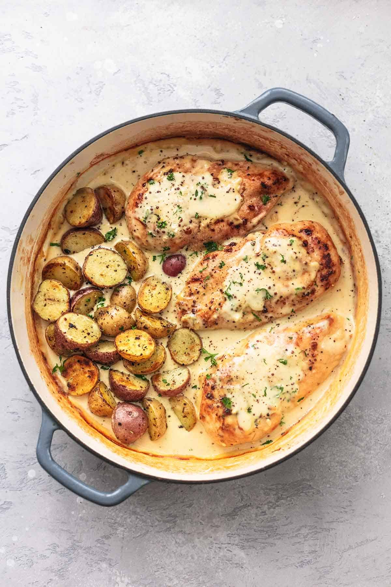

Chicken and Potatoes with Dijon Cream Sauce

Chicken and Potatoes with Dijon Cream Sauce is a flavorful one-pot wonder that’s good for any night of the week. Italian seasonings and Dijon mustard blend beautifully together in a rich, buttery sauce that goes perfectly with the tender chicken and potatoes.
4boneless skinless chicken breasts3 tspItalian blend seasoning, or Herbs de Provence3 tbspbutter3 tbspolive oil1½ lbbaby potatoes, halved or quartered as needed (they should be no large than 1 inch pieces)- Kosher salt and black pepper, to taste
Salt the chicken the day before and leave in fridge in a plastic bag or container.
Preheat oven to 375 degrees.
Combine chicken and potatoes in a large bowl. Drizzle with 2 tablespoons olive oil, toss to coat, then season generously with salt and pepper, and the Italian seasoning blend (or Herbs de Provence).
In a large skillet, melt butter over medium heat. Drizzle in 1 tablespoon olive oil and give it a good stir.
Add chicken to one half of the pan, potatoes to the other half. Cook undisturbed for 3-5 minutes, flip chicken and cook another 3-5 minutes til browned on both sides. Transfer chicken and potatoes to a plate and cover to keep warm.
1 tbspbutter2 tspminced garlic1 tbspflour½ cupchicken broth½ cupdry white wine2 tbspdijon mustard1 cupheavy cream½ tspsalt, or to taste¼ tspcracked black pepper, or to taste
In the same skillet, melt butter over medium heat. Stir in garlic for 30 seconds til fragrant. Add the flour and cook for 1 minute more.
Stir in chicken broth and dijon mustard, then whisk in heavy cream, salt and pepper.
Return chicken and potatoes to the pan, giving them a good toss in the sauce to keep them from drying out in the oven.
Transfer to preheated oven and bake for 15-20 minutes until chicken is cooked through and potatoes are fork-tender.
Spoon dijon sauce from the pan over the chicken and potatoes, garnish with freshly cracked black pepper and fresh herbs if desired, and serve.